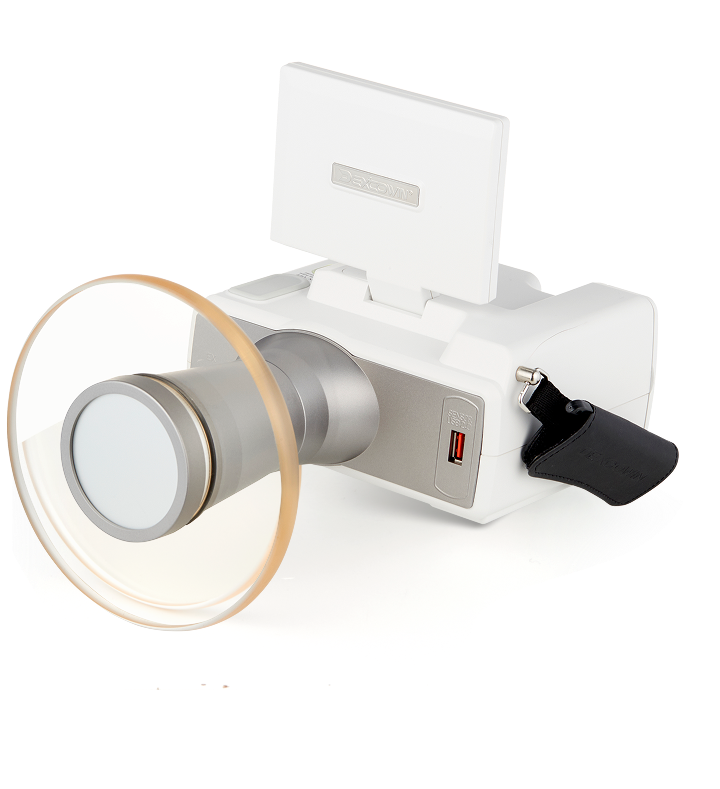
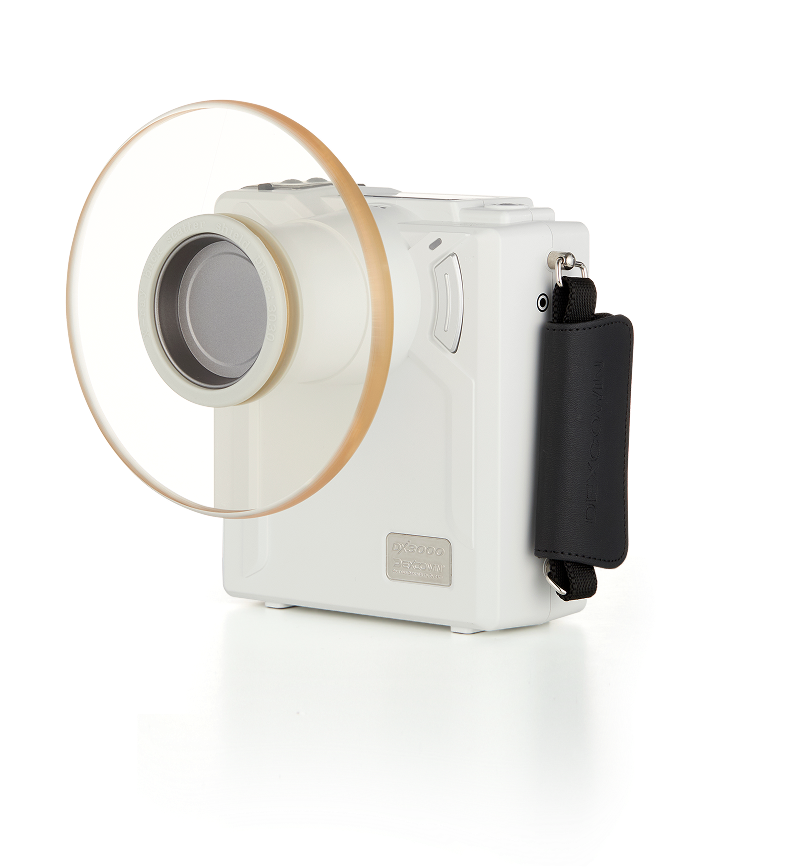
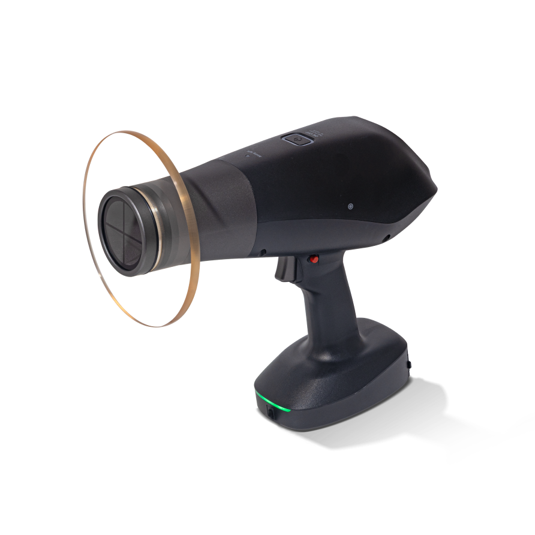
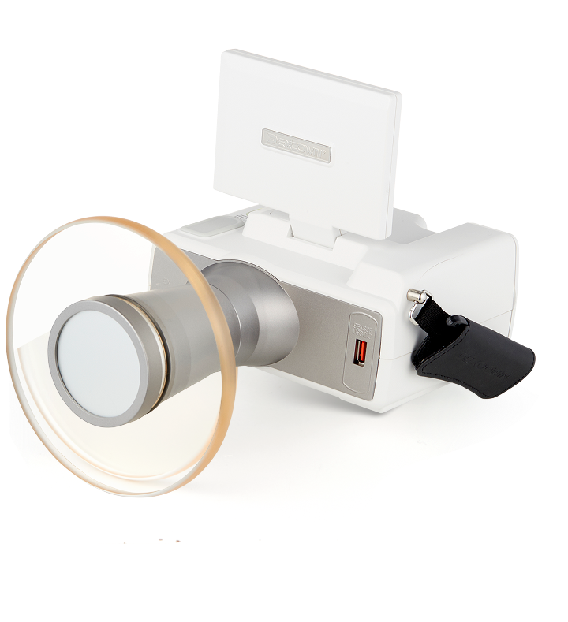
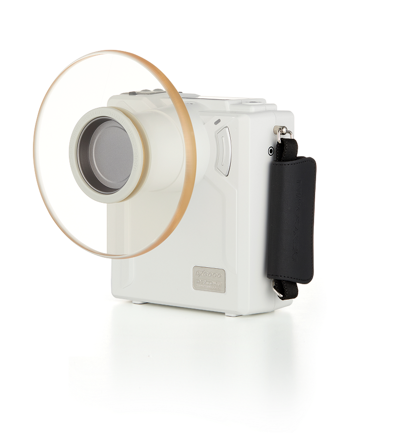
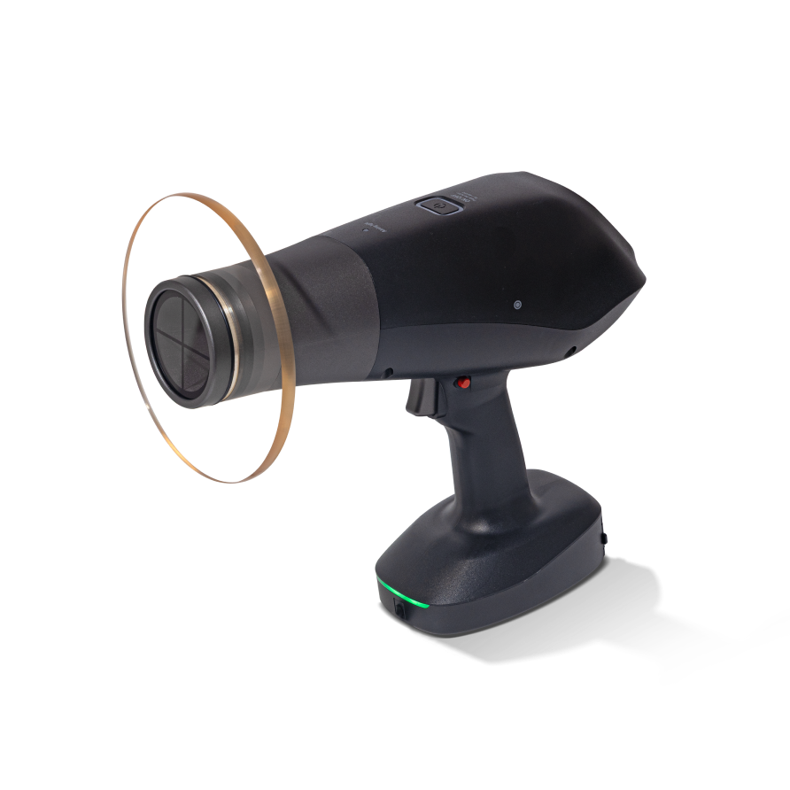

News
병원 밖에서도 X-ray 가능, 현장에서 바로 촬영하고 진단
이번 규제 개선으로 요양 시설에서는 낙상․골절 등의 위급상황 발생 시, 엑스레이 촬영을 위해 구급차...

Company
㈜덱스코윈은 포터블 엑스레이 분야를 선도하는 기업으로, 의료· 수의 · 산업 등 다양한 영역에서 활용 가능한 첨단장비와 솔루션을 개발, 제공하고 있습니다. 끊임없는 연구 개발을 통해 혁신적인 포터블 엑스레이 기술과 솔루션을 창출하여 인류복지와 삶의 질 향상에 기여하고 있습니다.
회사 소개 자세히 보기

포터블 엑스레이 전문 기업
산업용 및 의료용 진단장비를 위한 저선량,
고해상도 엑스레이
솔루션 및 시스템
시장 선도 기업
2004년에 설립 이후 포터블 엑스레이 장치의
선도 기업으로서
꾸준히 성장하고 있습니다.
R&D 선도 기업
끊임없는 연구 개발을 통해 다양한 엑스레이 장비
및 관련 제품을
개발합니다.
BUSINESS
㈜덱스코윈은 흉부를 비롯한 인체 전반 및 동물, 일반 산업 등 엑스레이가 필요한 모든 영역에서 최적의 진단 솔루션을 제공합니다.
PRODUCT
DEXCOWIN
 






전신을 아우르는 고품질 엑스레이 촬영을 지원합니다. 협소한 공간에서도 최적의 이미징 솔루션을 제공합니다. 저선량으로 고품질의 엑스레이 이미지를 정확하고 편리하게 획득할 수 있습니다.
인체공학적 설계로 흔들림 없는 안정적인 촬영을 지원합니다. 특허기술인 에이밍 라이트 적용하여 고품질의 엑스레이 이미지를 정확하고 편리하게 획득할 수 있습니다.※ 수출 전용 상품입니다
촬영 후 이미지를 디스플레이에서 바로 확인할 수있습니다. 공간의 제약없는 자유로운 진단 솔루션을 제공합니다.
한국 최초의 치과용 포터블 엑스레이로, 전 세계 시장에서의 검증된 뛰어난 품질과 내구성으로 고객들에게 고품질의 엑스레이 솔루션을 제공합니다.
더 가벼워진 제품으로 보다 편리한 촬영이 가능합니다. 특허기술인 에이밍 라이트를 적용하여 고품질의 엑스레이 이미지를 정확하고 편리하게 획득할 수 있습니다.
Intra Oral Sensor와 Flat Panel Detector, 치과, 인체, 수의, 정형, 산업용 등 모든 진단 환경에 최적화된 디지털 엑스레이 이미징 솔루션을 제공합니다.
WHY DEXCOWIN
배터리 탈착식 치과용 엑스레이의 시작, 혁신을 선도하는 포터블 엑스레이 전문 기업
기업부설 연구소를 운영하고 있고 매출의 30% 이상 R&D에 투자
85개국, 300여개 이상의 글로벌 파트너망을 구축하여 전세계로 수출
FDA, CE를 비롯한 다수의 글로벌 인증으로 안정성과 기술 우수성 입증
WHO WE ARE
with advanced x-ray solution
의료, 요양원, 치과, 수의사, 보안/NDT, 비상 사태, 군, 법정의 등
다양한 환경과 제한된 자원 속에서도
경제성과 정확성을 동시에
실현하는 포터블 엑스레이 솔루션을 제공합니다.
SUPPORT
전체 보기
News
이번 규제 개선으로 요양 시설에서는 낙상․골절 등의 위급상황 발생 시, 엑스레이 촬영을 위해 구급차...
News
배터리 구동 및 저선량 방사선으로 작동하는 COCOON은 의료 서비스 제공과 직원 교육 모두를 지원하며...
News
기존 장비 대비 1/3 수준의 방사선량으로 고품질 영상 촬영을 제공합니다.
News
휴대용 X선 장비 수출 선도기업으로서, 첨단 제품 개발과 글로벌 인증을 통해 성장해 나가겠습니다.